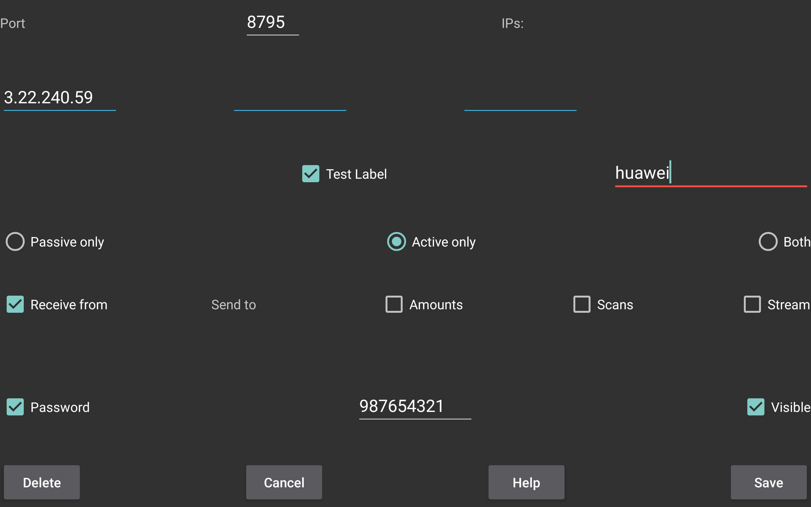
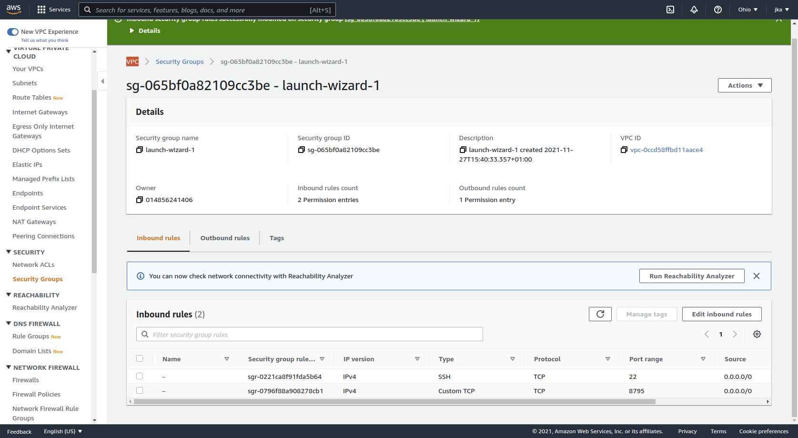

Juggluco
In Juggluco (an android app for Freestyle libre 0, 2 and 3 sensors) it is possible to make a network connection with a pc to transfer data to and from this pc.
You can compile it yourself from the source from the github of Juggluco or:
https://www.juggluco.nl/Juggluco/cmdline/download/juggluco-server8.0.21.src.tar.xzDynamically linked version for Ubuntu 20.04.4 LTS:
https://www.juggluco.nl/Juggluco/cmdline/download/juggluco8.0.21-dyn.xzStatically linked version:
https://www.juggluco.nl/Juggluco/cmdline/download/juggluco8.0.21.xzSSL can't be used with the statically linked version.
Follow this link on how to view Juggluco's saved data.
MirrorTo connect two devices running Juggluco directly with each other, at least one of them should listen on a network port. How to do that, you can see in the help menu of the Android version of Juggluco (left middle menu->Mirror->Add connection).
Some mobile data connections don't have a non-shared IP where an Android device can listen on a port. Connecting two of these phones is still possible by placing a computer in the middle running command line juggluco.
One possibility is to run a computer yourself connected to a modem; a cheaper possibility is to run command line juggluco on Amazon Aws. (It is also possible to keep an old Android smartphone home running Juggluco to which both other smartphones connect (Details)).
The current description only applies to Juggluco 1.4.0 or above.
Place juggluco in your current directory and make it executable:
chmod a+x ./juggluco
Try if it works with:
./juggluco -hThe juggluco binary has the following functions:
Configuring the server;
Running as a server daemon constantly in the background;
Exporting data from the server to a file.
If you want to run the server you have first to specify the settings.
Like when using Left middle menu->Mirror to add a connection, you have to specify of each connection in turn how and with whom it should connect.
A connection is one specific instance of Juggluco to which to send data and/or receive data.
NEVER put IPs of different connections in the same specification. It is always only one Juggluco or juggluco server running on a specific phone or computer. The mirror connections of Juggluco work by the sender of the data remembering what has already been send and only sending what is not send. This is different from how servers usually work, they give the data they are asked for. Juggluco send data when it comes available and after a connection disruption also the data it hasn't already send. If you put the IPS of different receivers in the same connection specification, they will both receive only part of the data and they will no longer work.
As you can see in ./juggluco -h adding a connection is of the following form:
juggluco [-d dir] OPTIONS IP1,IP2 ...
You always have to specify what the connection sends and whether it does receive.
Receiving you specify with -r
Sending with -n, -s and/or -b:
-n: send nums (amounts)
-s: send scans (via NFC received data)
-b: send stream (via bluetooth received data)
Thus, use -n to send nums, -s to send scans and -b to send stream. It is possible to merge different options:-sb is the same as -s -b.
You also have to specify how to recognize the connection. By default, juggluco server tests on the IP. If you don't want to test on IP, for example because of a passive only connection with a changing IP of the other site, you can specify -i to not test on the IP.
In most cases you also want to circumvent mistakes by testing on a label. You specify a label with -L. For example when you specify -L homecomputer the connection is made only when the other side has also used "homecomputer" as label.
Over the internet, you should also always specify a password with -w
With -p (lowercase) you can specify the port of other side.
-P (UPPERCASE) stands for passive only. This means that only the other side will initiate a connection with this instance of Juggluco server. -A means active only and in that case only this instance of Juggluco will initiate contact with the other side.
If the connection is passive only (-P) you don't need to specify IPs when you also specify -i.
In all other cases you need to specify the IPs of the other side, hostnames don't work.
You can let Juggluco server detect the IP of the first host that connects with -a.
For example:
./juggluco -ra -Lhallo -wniets -p 7788
Creates a receiver that automatically detect the IP with label hallo and password niets and the other side has port 7788.
By running ./juggluco -l you can lists the connections you have already configured.
In this case you see:
connection: 1: hallo detect, receiver niets, port=7788
To send to another host, you can specify:
./juggluco -n -s -b -Laway -wsomething -p 9999 192.168.1.69
This means that you send all data amounts (n), scans (s) and stream(b) to another Juggluco on a host with ip 192.168.1.69 listening on port 9999.
./juggluco -l show the following:
connections: 1: hallo detect, receiver niets, port=7788 2: away something, port=9999 send nums scans stream 192.168.1.69
You can also specify which port juggluco server is listening on.
For example
./juggluco -p 8923
Specifies that juggluco server should listen at port 8923.
You can again view the current setting with ./juggluco -l, now it will be:
Saving in directory jugglucodata xdrip/Nightscout webserver turned off Mirror port 8923 unit: mg/dL
In the same way you can also specify other settings, like what glucose unit to use when exporting data. Whether to turn on the web server (see https://www.juggluco.nl/Juggluco/webserver.html#cmdline), whether to use SSL for that server, on which SSL port to listen, the api_secret and the categories of the amounts when returning them as treatments following the Nightscout protocol.
See ./juggluco -h
After you have configured everything, you can start the server simply with:
./juggluco
After changing the configuration, you need to restart ./juggluco before they will take effect.
In the following example I have a Sony smartphone connected to the sensor and a Huawei tablet receiving data from the Sony smartphone.
So the Sony Smartphone is the sender of data. In left middle Menu->Mirror->Add Connection we specify it as an active only sender:
The label is "sony" and the password "123456789", it connects to a PC with IP 3.22.240.59 and port 8795.
On this PC we specify the corresponding receiver as:
./juggluco -riP -L sony -w 123456789 -r: receiver -i: ignore ip -P: passive only -L sony: test on label 'sony' -w 123456789: decrypt with password 123456789.
To get the data from the PC to the Huawei tablet, we add to the Add connection screen on the Huawei Tablet the following:

On the PC we specify the corresponding sender:
./juggluco -nsbiP -L huawei -w 987654321
-n: send numbers -s: send scans -b: send Bluetooth glucose values -i: ignore IP -P: passive only -L huawei: test on label huawei -w 987654321: encrypt with password 987654321
By pressing
./juggluco
the command line juggluco should now be ready for connections from Sony to receive data and from Huawei to send data to.
Later you can better put something like the following in repeat.sh:
while true do echo -n "Start new Juggluco Server: " date ./juggluco doneand run
nohup bash ./repeat.sh &
Karol Zygmunt created a juggluco service with systemd, so that the juggluco service is always started at boot. The script starting juggluco is put in /opt/juggluco/start-juggluco.sh containing:
#!/bin/bash path="/opt/juggluco/" logfile="$path/juggluco-service.log" timestamp=$(date "+%F %H:%M:%S") echo "[ $timestamp ] Starting new Juggluco Server." >> $logfile cd $path $path/juggluco timestamp=$(date "+%F %H:%M:%S") echo "[ $timestamp ] Juggluco Server has stopped." >> $logfile
/etc/systemd/system/juggluco.service contains:
[Unit] Description = Juggluco service After = network.target network-online.target Wants = network-online.target [Service] Type = simple User = [UID] Group = [GROUP_NAME] ExecStart = /opt/juggluco/start-juggluco.sh TimeoutStartSec = 0 RemainAfterExit = yes Restart = on-failure [Install] WantedBy = multi-user.target
I like to add the following:
First, make /opt/juggluco/start-juggluco.sh executable with
chmod a+x /opt/juggluco/start-juggluco.sh
Second, you always should create a separate user and group for the juggluco service and not run it under root. Thus create a juggluco user with:
adduser juggluco
And set the following in /etc/systemd/system/juggluco.service
User = juggluco Group = juggluco
Because of this you should either change the ownership of /opt/juggluco to juggluco:juggluco or set path="/home/juggluco/" in start-juggluco.sh
Also in the above way the service is not restarted when killed with kill -11 PID. So change RemainAfterExit to
RemainAfterExit = no
and add:
RestartSec=2 #StartLimitIntervalSec=0 #can be used instead of RestartSec Restart = always
/etc/systemd/system/juggluco.service thus becomes:
[Unit] Description = Juggluco service After = network.target network-online.target Wants = network-online.target [Service] Type = simple User = juggluco Group = juggluco ExecStart = /home/juggluco/start-juggluco.sh TimeoutStartSec = 0 RemainAfterExit = no #StartLimitIntervalSec=0 #can be used instead of RestartSec RestartSec=2 Restart = always [Install] WantedBy = multi-user.target
To start the service do:
systemctl start juggluco.serviceTo stop the service do:
systemctl stop juggluco.serviceTo make that the service is started at boot, do:
systemctl enable juggluco.service
Exactly the same you can do on a remote host you connect to over the Internet. For example Amazon AWS EC2. After paying one dollar with credit card, you can use it for one year.
Thereafter, you have maybe to pay 30 to 45 dollars a year. I don't know. If you don't close your account, you will be changed after one year even if you don't use it anymore.
An introduction with Chinese links: https://www.amazonaws.cn/en/getting-started/tutorials/launch-a-virtual-machine/
The following howto has US links, but doesn't say how to connect with ssh under Linux:
https://www.howtoforge.com/tutorial/how-to-setup-linux-server-with-aws/
If you have a virtual machine running and can login with ssh using mykey.pem, you can put juggluco on the machine with scp or sftp. On your Linux home computer:
scp -i mykey.pem file ec2-user@myaws:/home/ec2-user
Here myaws is the ip or hostname of the aws machine.
You also need to open the 8795 port.
Goto https://console.aws.amazon.com to find the Security group your VPC is using. Press 'Edit inbound rule". Here you should see a rule for ssh with port 22. Press "Add rule" and add a custom TCP with port 8795 source anywere IP4.

If you have uploaded juggluco to the AWS machine, you can do exactly the same as on the PC. If you don't look at the other settings, it is all very simple.
How to run the server on Azure and connect a LTE WearOS watch with an eSIM directly to Juggluco server without the companion phone as go between, is described here: https://www.juggluco.nl/Juggluco/cmdline/watch
Windows 10
Command line Juggluco is compiled for Linux x86_64, but because you can run Linux programs on Windows 10 there is no need for a special Windows version (see https://ubuntu.com/tutorials/ubuntu-on-windows).
To use ./juggluco under windows 10 you should, after installing WSL, redirect a network port from windows to Linux (running under windows), if they have different IPs.
You can find the Linux IP under bash by commands like:
ip route|sed -n 's/^.*src \([^ ]*\).*$/\1/p'
or
ifconfig|grep inet
In a powershell under adminstrator permission, clear previous proxy settings with:
netsh interface portproxy reset
And make a new redirection with:
netsh interface portproxy add v4tov4 listenport=$winport connectport=$linuxport connectaddress=$linuxip
Use for $winport the port number you like to contact to and $linuxport to the port number juggluco is listening on e.g. both 8795 and for $linuxip the ip you found above.
Give access to port $winport through the firewall with:
netsh advfirewall firewall add rule name=$winport dir=in action=allow protocol=TCP localport=$winport"
The windows IP you find with ipconfig in cmd.com or powershell
Ethernet adapter Ethernet:
[...]
IPv4 Address. . . . . . . . . . . : 192.168.122.230
[...]
For sending to ./juggluco running under linux under windows 10,
go to Mirror->add connection in Juggluco running under Android.
After Port you set $winport
Under Ips $windowsip
You check Amounts, Scans and or Stream and save.
To configure ./juggluco runnning under linux under windows 10 to receive this data, press in bash in the directory you placed juggluco in:
./juggluco -p $linuxport ./juggluco -rag
And start it with:
./juggluco
Command line options:
By running ./juggluco -h you get a help screen, as displayed here:
Command line program to create a Juggluco backup on a desktop computer.
Juggluco is an android applet that connects with Freestyle libre 2 sensors
and allows one to add diabetes diary data, see:
https://www.juggluco.nl/Juggluco
Within a certain directory (-d dir) backup and connection data is saved.
With this program, you can specify the connections the program
should receive data from and send data to.
Usages: /home/jka/bin/juggluco -d dir : save data in directory dir
/home/jka/bin/juggluco [-d dir] -p port : listen on port port
/home/jka/bin/juggluco [-d dir] -l : list configuration data
/home/jka/bin/juggluco [-d dir] -c : clear configuration data
/home/jka/bin/juggluco -x[-+]: start eXport/xDrip/Nightscout web server (https://www.juggluco.nl/Juggluco/webserver.html) or not (-x-)
/home/jka/bin/juggluco -X[-+]: the same but server can also be assessed remotely
/home/jka/bin/juggluco -g secret: use as api_secret secret
/home/jka/bin/juggluco -e[-+]: Use web server with SSL encryption
/home/jka/bin/juggluco -o port: use port for the SSL server
/home/jka/bin/juggluco -[0123456789][RLCOD] place label 0-9 in category R,L,C,O or D:
R: Rapid acting Insulin
L: Long acting Insulin
C: Carbohydate
O: cOmments
D: Don't send
-0R means label 0 (first one) is Rapid acting insulin
-1C means label 1 (second) is Carbohydrate
-2O means give label 2 as a cOmment
/home/jka/bin/juggluco [-d dir] -t[+]: give treatments/amounts via Nightscout interface
/home/jka/bin/juggluco [-d dir] -N filename: export nums
/home/jka/bin/juggluco [-d dir] -S filename: export scans
/home/jka/bin/juggluco [-d dir] -B filename: export stream
/home/jka/bin/juggluco [-d dir] -H filename: export history
/home/jka/bin/juggluco [-d dir] -m filename: export meals
/home/jka/bin/juggluco [-d dir] -M : mmol/L
/home/jka/bin/juggluco [-d dir] -G : mg/dL
/home/jka/bin/juggluco [-d dir] -R n : remove n-th connection
/home/jka/bin/juggluco [-d dir] -Z n : resend data to n-th connection
/home/jka/bin/juggluco -v : version
/home/jka/bin/juggluco [-d dir] OPTIONS IP1,IP2 ... : Specify connection with IP(s).
OPTIONS:
-r: receive from host
-a: automatically detect IP the first time
-A: Active only. Don't accept connections from this host. Only actively connect to this host.
-P: Passive only. Never connect actively to this host. Only accepts connections.
-n: send nums (amounts)
-s: send scans (via NFC received data)
-b: send stream (via bluetooth received data)
-L label: give connection label 'label'. A connection is only established if both side specify
the same label.
-i: don't test on ip
-w password: encrypt communication with password
-p port: connect to port (default: 8795)
-C n: overwrite n-th connection. If this program sends to this connection, data will not be resend.
example:
/home/jka/bin/juggluco -d mydir -r 192.168.1.64
Receive data from host 192.168.1.64 (an ip shown in backup screen android app)
In the juggluco android applet you can in "backup, add connection"
specify send to amounts, scans and stream and specify port 8795 and
an ip of this computer (e.g 192.168.1.68)
/home/jka/bin/juggluco -d mydir -nsb 192.168.1.69
Send the amounts, scans and stream data to 192.168.1.69 on the default port (8795)
In the android applet you can in the "add connection" dialog, specify
an ip of this computer (192.168.1.68) check "Receive from" and specify as port 8795
(the port specified earlier for this computer)
/home/jka/bin/juggluco -d mydir
Starts the program with this configuration.